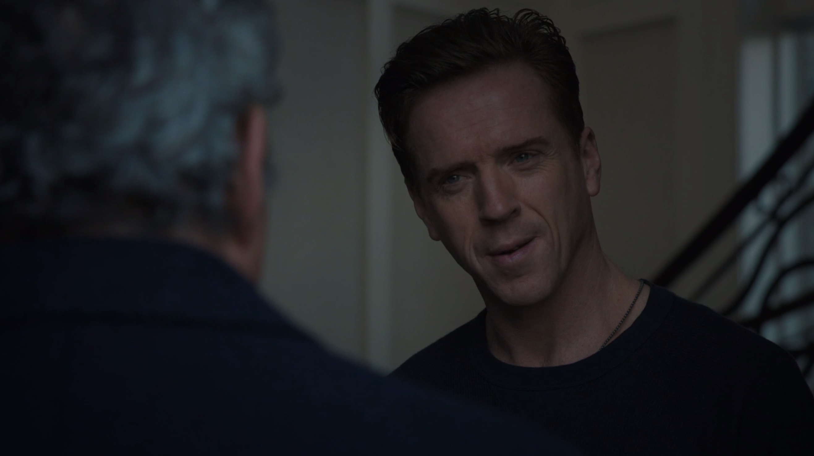

01
清晨 · 阿克斯家
先来敲门的，是已经自由的旧盟友

剧情事实提前获释的 博伊德 告诉阿克斯，他今天将被捕，故意以归还人情的姿态告别。劳拉说明自己和孩子不会跟他逃跑；阿克斯坚持留下战斗。霍尔的电话已停用，巴赫据此判断危机真实，阿克斯开始移动并商量自首条件。[1][2]
这一场为什么重要 · 个人解读
消息首先以私人羞辱而非正式通知抵达，让阿克斯无法决定见谁、说到哪里。劳拉没有替他定义是否逃跑，却明确划出了自己的行动边界。霍尔的消失又拿走惯用的信息通道；老板必须在尚不完整的情报里作决定，而不是等每一项危险都被解释清楚。
因此 → 他不等在桌前被抓，而是争取时间处理公司与家庭。